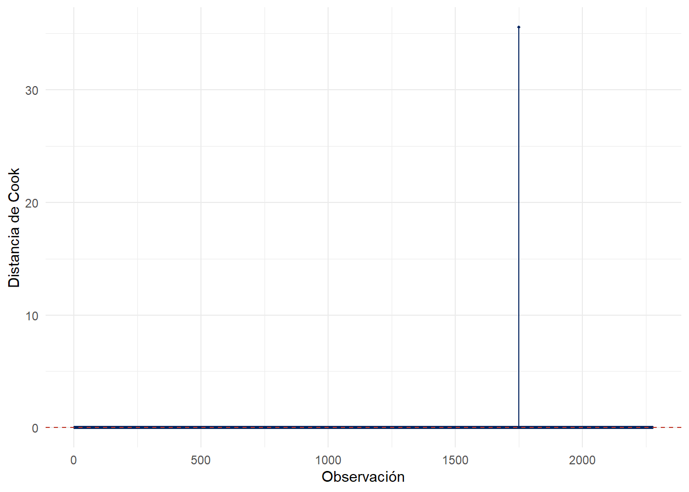
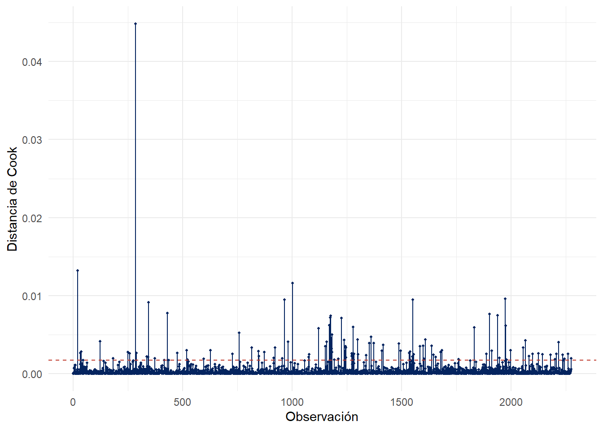
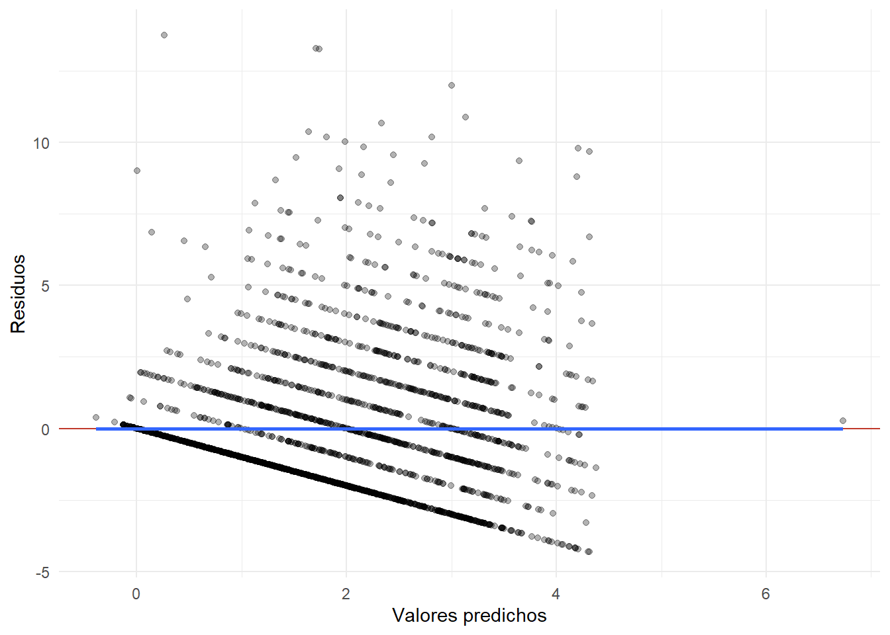
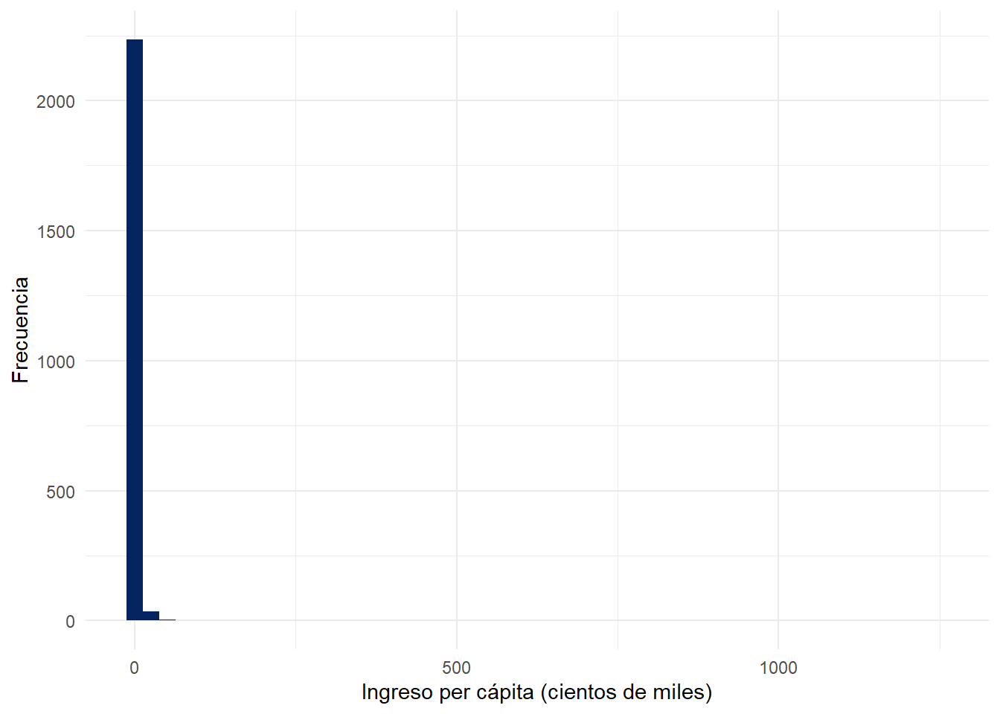
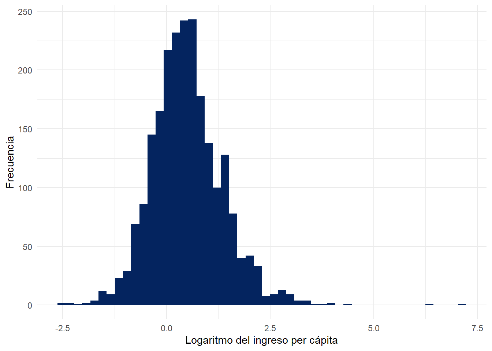
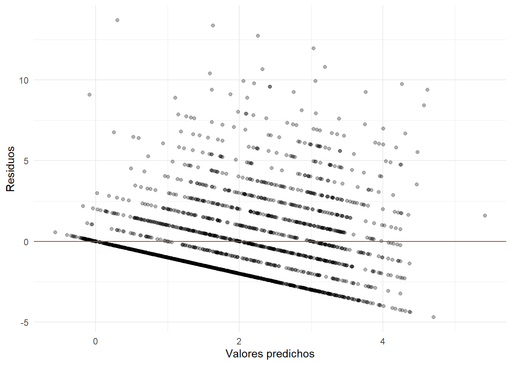

pacman::p_load(dplyr,
sjmisc,
sjPlot,
summarytools,
ggplot2,
kableExtra,
lmtest,
sandwich,
car)Práctico 11. Supuestos de regresión
Métodos estadísticos para Ciencias Sociales III
1 Presentación
1.1 Objetivo de la práctica
Un modelo de regresión siempre entrega coeficientes, pero eso no garantiza que sea una buena representación de la relación entre las variables. Esta práctica introduce el diagnóstico de supuestos: un conjunto de revisiones que permiten evaluar si el modelo es adecuado y qué hacer cuando no lo es.
Revisaremos cuatro aspectos:
- Casos influyentes: observaciones que por sí solas modifican los resultados
- Linealidad: si la relación entre las variables es efectivamente lineal
- Homocedasticidad: si la varianza de los residuos es constante
- Multicolinealidad: si los predictores están demasiado correlacionados entre sí
Estos diagnósticos se aplican al modelo de regresión lineal que vimos en la primera parte del curso, y deben formar parte del trabajo final.
1.2 La pregunta
Trabajaremos con la pregunta: ¿qué características se asocian con la participación política no electoral? Para ello usaremos un índice de participación construido a partir de cuatro formas de acción: firmar peticiones, asistir a marchas, participar en huelgas y opinar sobre temas públicos en redes sociales.
2 Librerías
rm(list = ls())
options(scipen = 999)
st_options(bootstrap.css = FALSE,
plain.ascii = FALSE,
style = "rmarkdown",
dfSummary.silent = TRUE,
footnote = NA,
subtitle.emphasis = FALSE)3 Datos
load(url("https://github.com/Kevin-carrasco/metod3-unab/raw/refs/heads/main/files/data/elsoc16-22.RData"))3.1 Variables
| Variable | Descripción | Valores |
|---|---|---|
c08_01 |
Frecuencia: firma carta o petición apoyando una causa | 1 = Nunca … 5 = Muy frecuentemente |
c08_02 |
Frecuencia: asiste a marcha o manifestación pacífica | 1 = Nunca … 5 = Muy frecuentemente |
c08_03 |
Frecuencia: participa en huelga | 1 = Nunca … 5 = Muy frecuentemente |
c08_04 |
Frecuencia: usa redes sociales para opinar en temas públicos | 1 = Nunca … 5 = Muy frecuentemente |
m0_sexo |
Sexo | 1 = Hombre, 2 = Mujer |
m0_edad |
Edad | En años |
m01 |
Nivel educacional | 1 a 10 |
m29 |
Ingreso total del hogar | En pesos |
nhogar1 |
Número de personas en el hogar | |
c15 |
Autoubicación en la escala izquierda-derecha | 0 = Izquierda … 10 = Derecha; 11 y 12 = Independiente o ninguna |
3.2 Preparación
proc_data <- elsoc_long_2016_2022.2 %>%
filter(ola == 1) %>%
select(c08_01, c08_02, c08_03, c08_04, m0_sexo, m0_edad, m01, m29, nhogar1, c15) %>%
set_na(., na = c(-999, -888, -777, -666)) %>%
rename("sexo" = m0_sexo,
"edad" = m0_edad,
"educacion" = m01,
"ingreso_hogar" = m29,
"n_hogar" = nhogar1,
"pospol" = c15) %>%
na.omit() %>%
filter(ingreso_hogar > 0)3.2.1 Índice de participación
Cada ítem va de 1 (nunca) a 5 (muy frecuentemente). Les restamos 1 para que vayan de 0 a 4, y los sumamos. El índice resultante va de 0 (nunca ha realizado ninguna de las cuatro acciones) a 16.
proc_data <- proc_data %>%
mutate(participacion = (c08_01 - 1) + (c08_02 - 1) + (c08_03 - 1) + (c08_04 - 1))3.2.2 Predictores
El ingreso per cápita se obtiene dividiendo el ingreso del hogar por el número de personas, y lo expresamos en cientos de miles de pesos para que los coeficientes sean legibles. La posición política se agrupa en cuatro categorías, con la derecha como referencia.
proc_data <- proc_data %>%
mutate(sexo_f = factor(sexo,
levels = c(1, 2),
labels = c("Hombre", "Mujer")),
educ_f = factor(case_when(educacion <= 3 ~ 1,
educacion <= 5 ~ 2,
TRUE ~ 3),
levels = c(1, 2, 3),
labels = c("Educación básica",
"Educación media",
"Educación superior")),
ing_pc = ingreso_hogar / n_hogar / 100000,
pospol_f = factor(case_when(pospol >= 6 & pospol <= 10 ~ 1,
pospol == 5 ~ 2,
pospol <= 4 ~ 3,
pospol >= 11 ~ 4),
levels = c(1, 2, 3, 4),
labels = c("Derecha", "Centro", "Izquierda",
"Independiente / ninguna")))3.3 Descriptivos
proc_data %>%
select(participacion, sexo_f, edad, educ_f, ing_pc, pospol_f) %>%
dfSummary(headings = FALSE) %>%
print(method = "render")| No | Variable | Stats / Values | Freqs (% of Valid) | Graph | Valid | Missing | ||||||||||||||||||||
|---|---|---|---|---|---|---|---|---|---|---|---|---|---|---|---|---|---|---|---|---|---|---|---|---|---|---|
| 1 | participacion [numeric] |
|
16 distinct values |  |
2275 (100.0%) | 0 (0.0%) | ||||||||||||||||||||
| 2 | sexo_f [factor] |
|
|
 |
2275 (100.0%) | 0 (0.0%) | ||||||||||||||||||||
| 3 | edad [numeric] |
|
63 distinct values |  |
2275 (100.0%) | 0 (0.0%) | ||||||||||||||||||||
| 4 | educ_f [factor] |
|
|
 |
2275 (100.0%) | 0 (0.0%) | ||||||||||||||||||||
| 5 | ing_pc [numeric] |
|
306 distinct values |  |
2275 (100.0%) | 0 (0.0%) | ||||||||||||||||||||
| 6 | pospol_f [factor] |
|
|
 |
2275 (100.0%) | 0 (0.0%) |
Dos cosas llaman la atención:
- La participación está muy concentrada en 0: cerca de la mitad de las personas nunca ha realizado ninguna de las cuatro acciones
- El ingreso per cápita tiene un valor máximo extremadamente alto. Revisemos los cinco casos con mayor ingreso:
proc_data %>%
arrange(desc(ingreso_hogar)) %>%
select(ingreso_hogar, n_hogar, ing_pc) %>%
head(5) ingreso_hogar n_hogar ing_pc
1 4000000000 2 20000.00000
2 250000000 2 1250.00000
3 104000000 2 520.00000
4 23000000 4 57.50000
5 10000000 3 33.33333Un hogar declara un ingreso de 4.000 millones de pesos mensuales. Volveremos sobre este caso.
4 Estimación
m1 <- lm(participacion ~ sexo_f + edad + educ_f + ing_pc + pospol_f,
data = proc_data)
tab_model(m1,
show.ci = FALSE,
p.style = "stars",
digits = 3,
dv.labels = "Modelo 1",
string.pred = "Predictores",
string.est = "β")| Modelo 1 | |
|---|---|
| Predictores | β |
| (Intercept) | 2.410 *** |
| sexo f [Mujer] | -0.076 |
| edad | -0.032 *** |
| educ f [Educación media] | 0.707 *** |
| educ f [Educación superior] |
1.752 *** |
| ing pc | 0.000 |
| pospol f [Centro] | 0.098 |
| pospol f [Izquierda] | 0.837 *** |
| pospol f [Independiente / ninguna] |
-0.056 |
| Observations | 2275 |
| R2 / R2 adjusted | 0.155 / 0.152 |
| * p<0.05 ** p<0.01 *** p<0.001 | |
A primera vista, el ingreso no tiene ninguna relación con la participación: su coeficiente es prácticamente 0 y no es significativo. Veremos que esa conclusión depende en buena medida de un solo caso.
5 Casos influyentes
5.1 Qué es un caso influyente
Un caso es influyente si su presencia o ausencia modifica de manera importante los coeficientes del modelo. No todo valor extremo es influyente: un caso alejado del resto solo es influyente si además tiene capacidad de “palanca” sobre la recta de regresión.
5.2 Distancia de Cook
La distancia de Cook mide cuánto cambian las predicciones del modelo al excluir cada observación. Se calcula para cada caso con la función cooks.distance(), y suele usarse como punto de corte el valor \(4/(n-k-1)\), donde \(n\) es el número de casos y \(k\) el número de parámetros del modelo.
n <- nobs(m1)
k <- length(coef(m1))
corte <- 4 / (n - k - 1)
corte[1] 0.001766004proc_data$cook <- cooks.distance(m1)
proc_data$id <- 1:nrow(proc_data)
sum(proc_data$cook > corte)[1] 106ggplot(proc_data, aes(x = id, y = cook)) +
geom_segment(aes(xend = id, yend = 0), color = "#04245f") +
geom_point(size = 0.8, color = "#04245f") +
geom_hline(yintercept = corte, color = "#c0392b", linetype = "dashed") +
labs(x = "Observación", y = "Distancia de Cook") +
theme_minimal()
Un solo caso tiene una distancia de Cook tan alta que el resto de las observaciones ni siquiera se distingue en el gráfico:
proc_data %>%
filter(cook == max(cook)) %>%
select(id, ingreso_hogar, n_hogar, ing_pc, cook) id ingreso_hogar n_hogar ing_pc cook
1 1750 4000000000 2 20000 35.53214Es el hogar con ingresos de 4.000 millones de pesos. Lo más probable es que se trate de un error de registro, por lo que tenemos una buena razón sustantiva para excluirlo.
proc_data2 <- proc_data %>%
filter(id != id[which.max(cook)])
m2 <- lm(participacion ~ sexo_f + edad + educ_f + ing_pc + pospol_f,
data = proc_data2)¿Cambian los resultados al excluir solo este caso?
tab_model(m1, m2,
show.ci = FALSE,
p.style = "stars",
digits = 5,
dv.labels = c("M1: todos los casos", "M2: sin el caso extremo"),
string.pred = "Predictores",
string.est = "β")| M1: todos los casos | M2: sin el caso extremo | |
|---|---|---|
| Predictores | β | β |
| (Intercept) | 2.40976 *** | 2.40855 *** |
| sexo f [Mujer] | -0.07574 | -0.07239 |
| edad | -0.03204 *** | -0.03207 *** |
| educ f [Educación media] | 0.70712 *** | 0.70470 *** |
| educ f [Educación superior] |
1.75217 *** | 1.74302 *** |
| ing pc | 0.00007 | 0.00224 |
| pospol f [Centro] | 0.09822 | 0.09731 |
| pospol f [Izquierda] | 0.83705 *** | 0.83057 *** |
| pospol f [Independiente / ninguna] |
-0.05616 | -0.05816 |
| Observations | 2275 | 2274 |
| R2 / R2 adjusted | 0.155 / 0.152 | 0.155 / 0.152 |
| * p<0.05 ** p<0.01 *** p<0.001 | ||
El coeficiente del ingreso per cápita es más de 30 veces mayor sin este caso: pasa de 0,00007 a 0,00224. Un solo hogar, entre más de 2.000, bastaba para anular prácticamente el efecto del ingreso. Aun así, el coeficiente sigue sin ser significativo; volveremos sobre esto en la sección de linealidad. Los demás coeficientes casi no cambian, porque el error estaba en la variable de ingreso.
5.3 Los demás casos sobre el punto de corte
Sin el caso extremo, volvamos a calcular la distancia de Cook:
proc_data2$cook <- cooks.distance(m2)
corte2 <- 4 / (nobs(m2) - length(coef(m2)) - 1)
sum(proc_data2$cook > corte2)[1] 107ggplot(proc_data2, aes(x = id, y = cook)) +
geom_segment(aes(xend = id, yend = 0), color = "#04245f") +
geom_point(size = 0.8, color = "#04245f") +
geom_hline(yintercept = corte2, color = "#c0392b", linetype = "dashed") +
labs(x = "Observación", y = "Distancia de Cook") +
theme_minimal()
Todavía hay más de cien casos sobre el punto de corte. ¿Debemos eliminarlos también? Antes de decidir, revisemos quiénes son:
proc_data2 %>%
mutate(influyente = ifelse(cook > corte2, "Sobre el corte", "Bajo el corte")) %>%
group_by(influyente) %>%
summarise(n = n(),
participacion_promedio = mean(participacion),
porcentaje_izquierda = mean(pospol_f == "Izquierda") * 100)# A tibble: 2 × 4
influyente n participacion_promedio porcentaje_izquierda
<chr> <int> <dbl> <dbl>
1 Bajo el corte 2167 1.57 18.9
2 Sobre el corte 107 9.53 39.3Los casos sobre el punto de corte son, sobre todo, las personas que más participan: su promedio en el índice es de alrededor de 9,5 puntos, frente a 1,6 del resto. Y el doble de ellos se ubica en la izquierda. Estimemos el modelo sin ellos para comparar:
m3 <- lm(participacion ~ sexo_f + edad + educ_f + ing_pc + pospol_f,
data = filter(proc_data2, cook <= corte2))
tab_model(m1, m2, m3,
show.ci = FALSE,
p.style = "stars",
digits = 3,
dv.labels = c("M1: todos los casos", "M2: sin el caso extremo",
"M3: sin casos sobre el corte"),
string.pred = "Predictores",
string.est = "β")| M1: todos los casos | M2: sin el caso extremo | M3: sin casos sobre el corte | |
|---|---|---|---|
| Predictores | β | β | β |
| (Intercept) | 2.410 *** | 2.409 *** | 1.965 *** |
| sexo f [Mujer] | -0.076 | -0.072 | 0.068 |
| edad | -0.032 *** | -0.032 *** | -0.028 *** |
| educ f [Educación media] | 0.707 *** | 0.705 *** | 0.597 *** |
| educ f [Educación superior] |
1.752 *** | 1.743 *** | 1.510 *** |
| ing pc | 0.000 | 0.002 | -0.007 |
| pospol f [Centro] | 0.098 | 0.097 | 0.213 |
| pospol f [Izquierda] | 0.837 *** | 0.831 *** | 0.462 *** |
| pospol f [Independiente / ninguna] |
-0.056 | -0.058 | -0.059 |
| Observations | 2275 | 2274 | 2167 |
| R2 / R2 adjusted | 0.155 / 0.152 | 0.155 / 0.152 | 0.177 / 0.174 |
| * p<0.05 ** p<0.01 *** p<0.001 | |||
Al eliminar los casos sobre el corte, el coeficiente de izquierda baja de 0,83 a 0,46. Esos casos no son errores: son las personas más activas políticamente, que es justamente el fenómeno que queremos estudiar.
ImportanteEliminar casos es una decisión, no un procedimiento automático
El punto de corte de la distancia de Cook sirve para identificar casos que merecen revisión. La decisión de excluirlos debe justificarse:
- Un caso que corresponde a un error (como el ingreso de 4.000 millones) puede excluirse
- Casos válidos que influyen en los resultados no deberían eliminarse sin más. Lo recomendable es estimar el modelo con y sin ellos, reportar ambos y comentar si las conclusiones cambian
En lo que sigue trabajaremos con el Modelo 2, que solo excluye el caso con error.
6 Linealidad
6.1 Residuos y valores predichos
El modelo de regresión supone que la relación entre las variables es lineal. Una forma de revisarlo es graficar los residuos contra los valores predichos: si la relación es lineal, los residuos deberían distribuirse de forma aleatoria en torno a 0, sin ningún patrón.
data.frame(predichos = fitted(m2),
residuos = resid(m2)) %>%
ggplot(aes(x = predichos, y = residuos)) +
geom_point(alpha = 0.3) +
geom_hline(yintercept = 0, color = "#c0392b") +
geom_smooth(se = FALSE) +
labs(x = "Valores predichos", y = "Residuos") +
theme_minimal()
Se observan líneas diagonales en la parte inferior del gráfico. Corresponden a las personas con participación 0: como el índice no puede bajar de 0, su residuo queda determinado por su valor predicho. Es una consecuencia de la gran concentración de casos en 0 que vimos en los descriptivos.
Cuando hay problemas de linealidad, una alternativa es transformar los predictores. Revisaremos dos transformaciones habituales.
6.2 Transformación polinomial: edad al cuadrado
La relación entre edad y muchas actitudes o conductas no siempre es lineal: puede aumentar hasta cierta edad y luego disminuir. Para capturar una relación curva se agrega al modelo el cuadrado de la variable, además de la variable original.
proc_data2$edad2 <- proc_data2$edad^2
m4 <- lm(participacion ~ sexo_f + edad + edad2 + educ_f + ing_pc + pospol_f,
data = proc_data2)summary(m4)$coefficients[c("edad", "edad2"), ] Estimate Std. Error t value Pr(>|t|)
edad -0.03892899413 0.0209657404 -1.8567908 0.06347072
edad2 0.00007337412 0.0002209384 0.3321022 0.73984286El término cuadrático no es significativo: la relación entre edad y participación no presenta una curvatura relevante, y podemos mantener la edad en su forma lineal. No todas las transformaciones mejoran el modelo, y por eso hay que evaluarlas antes de incorporarlas.
6.3 Transformación logarítmica: ingreso
El ingreso es una variable muy asimétrica: la mayoría de los hogares se concentra en valores bajos y unos pocos alcanzan valores muy altos. En esos casos se suele reemplazar la variable por su logaritmo, que comprime las diferencias en la parte alta de la distribución.
proc_data2$ln_ing <- log(proc_data2$ing_pc)ggplot(proc_data2, aes(x = ing_pc)) +
geom_histogram(bins = 50, fill = "#04245f") +
labs(x = "Ingreso per cápita (cientos de miles)", y = "Frecuencia") +
theme_minimal()
ggplot(proc_data2, aes(x = ln_ing)) +
geom_histogram(bins = 50, fill = "#04245f") +
labs(x = "Logaritmo del ingreso per cápita", y = "Frecuencia") +
theme_minimal()
m5 <- lm(participacion ~ sexo_f + edad + educ_f + ln_ing + pospol_f,
data = proc_data2)
tab_model(m2, m4, m5,
show.ci = FALSE,
p.style = "stars",
digits = 3,
dv.labels = c("M2: lineal", "M4: edad al cuadrado", "M5: log ingreso"),
string.pred = "Predictores",
string.est = "β")| M2: lineal | M4: edad al cuadrado | M5: log ingreso | |
|---|---|---|---|
| Predictores | β | β | β |
| (Intercept) | 2.409 *** | 2.551 *** | 2.432 *** |
| sexo f [Mujer] | -0.072 | -0.072 | -0.004 |
| edad | -0.032 *** | -0.039 | -0.034 *** |
| educ f [Educación media] | 0.705 *** | 0.707 *** | 0.625 *** |
| educ f [Educación superior] |
1.743 *** | 1.743 *** | 1.514 *** |
| ing pc | 0.002 | 0.002 | |
| pospol f [Centro] | 0.097 | 0.096 | 0.101 |
| pospol f [Izquierda] | 0.831 *** | 0.831 *** | 0.842 *** |
| pospol f [Independiente / ninguna] |
-0.058 | -0.058 | -0.039 |
| edad2 | 0.000 | ||
| ln ing | 0.245 *** | ||
| Observations | 2274 | 2274 | 2274 |
| R2 / R2 adjusted | 0.155 / 0.152 | 0.155 / 0.152 | 0.159 / 0.157 |
| * p<0.05 ** p<0.01 *** p<0.001 | |||
Con el ingreso en su forma original, su coeficiente no era significativo. En logaritmo, el efecto es positivo y significativo (\(p<0,001\)), y el \(R^2\) ajustado aumenta levemente.
NotaCómo interpretar un predictor en logaritmo
Cuando un predictor está en logaritmo, su coeficiente dividido por 100 indica el cambio en \(y\) asociado a un aumento de 1% en \(x\). Con un coeficiente de 0,245, un aumento de 1% en el ingreso per cápita se asocia con un aumento de 0,00245 puntos en el índice de participación.
Una lectura más intuitiva: duplicar el ingreso se asocia con un aumento de \(0.245 \times \ln(2) = 0.17\) puntos en el índice, manteniendo constantes las demás variables.
Trabajaremos en adelante con el Modelo 5.
7 Homocedasticidad
El modelo de regresión supone que la varianza de los residuos es constante para todos los valores predichos. Cuando no lo es, hay heterocedasticidad, lo que afecta los errores estándar y, por lo tanto, la significación de los coeficientes.
Volvamos al gráfico de residuos, ahora del Modelo 5:
data.frame(predichos = fitted(m5),
residuos = resid(m5)) %>%
ggplot(aes(x = predichos, y = residuos)) +
geom_point(alpha = 0.3) +
geom_hline(yintercept = 0, color = "#c0392b") +
labs(x = "Valores predichos", y = "Residuos") +
theme_minimal()
La dispersión de los residuos aumenta a medida que crecen los valores predichos: tiene forma de embudo. Es una señal de heterocedasticidad.
7.1 Test de Breusch-Pagan
El test de Breusch-Pagan contrasta la hipótesis nula de que la varianza de los residuos es constante:
- \(H_0\): la varianza es constante (homocedasticidad)
- \(H_1\): la varianza no es constante (heterocedasticidad)
lmtest::bptest(m5)
studentized Breusch-Pagan test
data: m5
BP = 103.95, df = 8, p-value < 0.00000000000000022El valor \(p\) es menor a 0,05, por lo que rechazamos la hipótesis nula: hay heterocedasticidad. A diferencia de los contrastes que hemos visto en el curso, aquí lo deseable es no rechazar la hipótesis nula.
7.2 Errores estándar robustos
Una solución habitual es estimar errores estándar robustos a la heterocedasticidad. Los coeficientes no cambian; lo que cambia es su error estándar y, por lo tanto, su significación.
robusto <- coeftest(m5, vcov = vcovHC(m5, type = "HC3"))
robusto
t test of coefficients:
Estimate Std. Error t value
(Intercept) 2.4316365 0.2746712 8.8529
sexo_fMujer -0.0040756 0.1086457 -0.0375
edad -0.0338612 0.0037287 -9.0811
educ_fEducación media 0.6249597 0.1127334 5.5437
educ_fEducación superior 1.5142423 0.1545540 9.7975
ln_ing 0.2449488 0.0704236 3.4782
pospol_fCentro 0.1009274 0.1573721 0.6413
pospol_fIzquierda 0.8423295 0.1871581 4.5006
pospol_fIndependiente / ninguna -0.0387734 0.1469364 -0.2639
Pr(>|t|)
(Intercept) < 0.00000000000000022 ***
sexo_fMujer 0.9700797
edad < 0.00000000000000022 ***
educ_fEducación media 0.00000003306 ***
educ_fEducación superior < 0.00000000000000022 ***
ln_ing 0.0005143 ***
pospol_fCentro 0.5213733
pospol_fIzquierda 0.00000711823 ***
pospol_fIndependiente / ninguna 0.7918973
---
Signif. codes: 0 '***' 0.001 '**' 0.01 '*' 0.05 '.' 0.1 ' ' 1Comparemos los errores estándar originales con los robustos:
data.frame(coeficiente = coef(m5),
ee_original = sqrt(diag(vcov(m5))),
ee_robusto = robusto[, "Std. Error"],
p_original = summary(m5)$coefficients[, "Pr(>|t|)"],
p_robusto = robusto[, "Pr(>|t|)"]) %>%
kable(digits = 3,
col.names = c("Coeficiente", "EE original", "EE robusto",
"p original", "p robusto")) %>%
kable_styling(full_width = FALSE)| Coeficiente | EE original | EE robusto | p original | p robusto | |
|---|---|---|---|---|---|
| (Intercept) | 2.432 | 0.276 | 0.275 | 0.000 | 0.000 |
| sexo_fMujer | -0.004 | 0.106 | 0.109 | 0.969 | 0.970 |
| edad | -0.034 | 0.004 | 0.004 | 0.000 | 0.000 |
| educ_fEducación media | 0.625 | 0.139 | 0.113 | 0.000 | 0.000 |
| educ_fEducación superior | 1.514 | 0.164 | 0.155 | 0.000 | 0.000 |
| ln_ing | 0.245 | 0.066 | 0.070 | 0.000 | 0.001 |
| pospol_fCentro | 0.101 | 0.173 | 0.157 | 0.559 | 0.521 |
| pospol_fIzquierda | 0.842 | 0.177 | 0.187 | 0.000 | 0.000 |
| pospol_fIndependiente / ninguna | -0.039 | 0.158 | 0.147 | 0.806 | 0.792 |
Los errores estándar cambian levemente, pero ningún coeficiente cambia su significación. Podemos concluir que nuestros resultados son robustos a la heterocedasticidad.
8 Multicolinealidad
Si dos o más predictores están muy correlacionados entre sí, los errores estándar se inflan y es más difícil rechazar la hipótesis nula. Para detectarlo se usa el factor de inflación de varianza (VIF):
\[VIF = \frac{1}{1-R^2_x}\]
donde \(R^2_x\) es el \(R^2\) de un modelo en que el predictor \(x\) es explicado por los demás predictores. Valores sobre 2,5 pueden indicar problemas.
car::vif(m5) GVIF Df GVIF^(1/(2*Df))
sexo_f 1.048254 1 1.023843
edad 1.198916 1 1.094950
educ_f 1.480529 2 1.103073
ln_ing 1.266126 1 1.125222
pospol_f 1.049701 3 1.008117En el Modelo 5 no hay problemas de multicolinealidad. Cuando el modelo incluye variables categóricas, vif entrega el GVIF, una versión generalizada; para comparar con el punto de corte se usa la última columna elevada al cuadrado.
Veamos ahora el Modelo 4, que incluía la edad al cuadrado:
car::vif(m4) GVIF Df GVIF^(1/(2*Df))
sexo_f 1.014379 1 1.007164
edad 38.414455 1 6.197940
edad2 38.270287 1 6.186298
educ_f 1.239056 2 1.055049
ing_pc 1.005912 1 1.002952
pospol_f 1.051490 3 1.008403La edad y su cuadrado tienen valores de VIF muy altos. Es esperable, porque una variable y su cuadrado están casi perfectamente correlacionadas. Este tipo de multicolinealidad se produce por construcción y no es preocupante: los términos polinomiales siempre deben interpretarse en conjunto.
9 Resumen
| Supuesto | Cómo se revisa | Qué hacer si no se cumple |
|---|---|---|
| Casos influyentes | Distancia de Cook | Revisar los casos; excluir solo con justificación y comparar modelos |
| Linealidad | Gráfico de residuos y predichos | Transformaciones polinomiales o logarítmicas |
| Homocedasticidad | Gráfico de residuos; test de Breusch-Pagan | Errores estándar robustos |
| Multicolinealidad | VIF | Revisar predictores redundantes |
TipPara el trabajo final
El informe debe incluir una sección de diagnóstico del modelo final, que reporte al menos:
- La revisión de casos influyentes y la decisión tomada respecto de ellos
- El gráfico de residuos y valores predichos
- El test de Breusch-Pagan y, si corresponde, la comparación con errores estándar robustos
- Los valores del VIF
Más que aplicar todas las correcciones, lo importante es informar qué se revisó, qué se encontró y qué decisión se tomó.
10 Ejercicios
Estime un modelo de regresión con el estatus subjetivo (
d01_01, de 0 a 10) como variable dependiente, y sexo, edad, nivel educacional e ingreso per cápita como predictores. Use la ola 1 de ELSOC.Calcule la distancia de Cook, identifique los casos sobre el punto de corte y revise sus características. ¿Qué decisión tomaría respecto de ellos? Justifique.
Grafique los residuos contra los valores predichos. ¿Observa algún patrón?
Estime un modelo con el logaritmo del ingreso per cápita e interprete su coeficiente.
Aplique el test de Breusch-Pagan. Si hay heterocedasticidad, compare los errores estándar originales con los robustos.
Calcule el VIF del modelo final y comente si hay problemas de multicolinealidad.